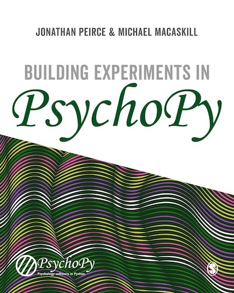

|

|
|
|
|
There are a number of further resources to help learn/teach about PsychoPy.
If you also have PsychoPy materials/course then please let us know so that we can link to them from here too!
At Nottingham we run an annual workshop on Python/PsychoPy (ie. programming, not Builder). Please see the page on PsychoPy official workshops for further details.
The most comprehensive guide is the book Building Experiments in PsychoPy by Peirce and MacAskill. The book is suitable for a wide range of needs and skill sets, with 3 sections for:
- The Beginner (suitable for undergraduate teaching)
- The Professional (more detail for creating more precise studies)
- The Specialist (with info about specialist needs such as studies in fMRI, EEG, …)
At School of Psychology, University of Nottingham, PsychoPy is now used for all first year practical class teaching. The classes that comprise that first year course are provided below. They were created partially with funding from the former Higher Education Academy Psychology Network. Note that the materials here will be updated frequently as they are further developed (e.g. to update screenshots etc) so make sure you have the latest version of them!
PsychoPy_pracs_2011v2.zip (21MB) (last updated: 15 Dec 2011)
The GestaltReVision group (University of Leuven) wiki covering PsychoPy (some Builder info and great tutorials for Python/PsychoPy coding of experiments).
ECEM, August 2013 : Python for eye-tracking workshop with (Sol Simpson, Michael MacAskill and Jon Peirce). Download Python-for-eye-tracking materials
Yale, 21-23 July : The first ever dedicated PsychoPy workshop/conference was at Yale, 21-23 July 2011. Thanks Jeremy for organising!
EPS Satellite workshop, 8 July 2011
BPS Maths Stats and Computing Section workshop (Dec 2010):